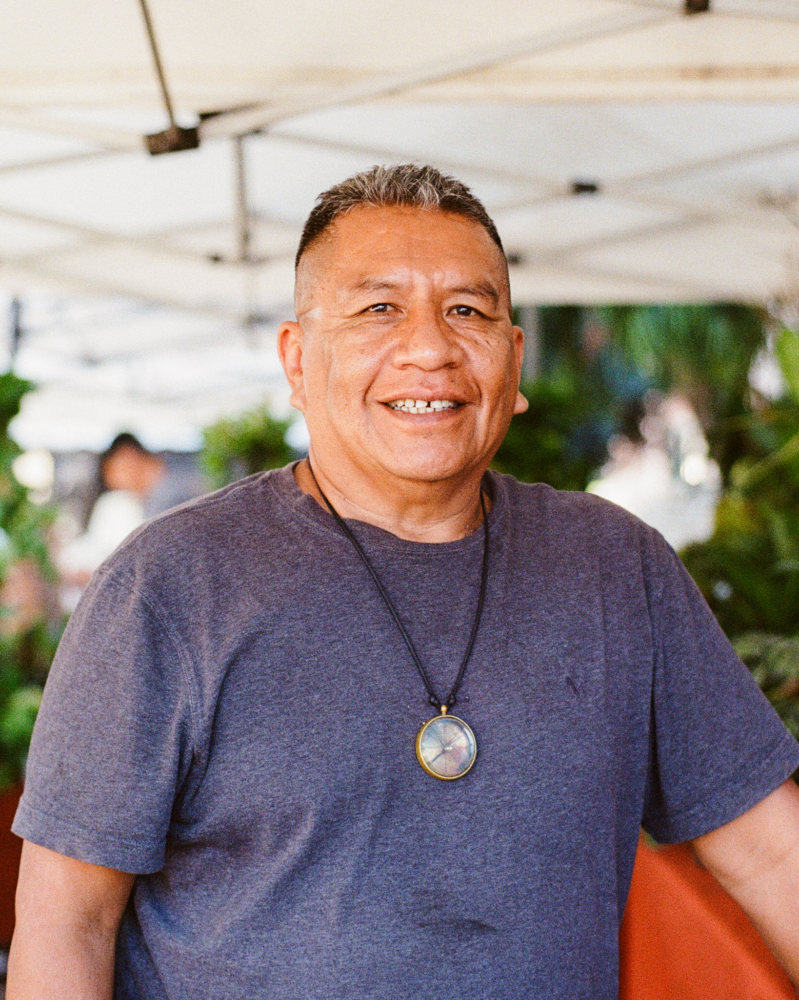
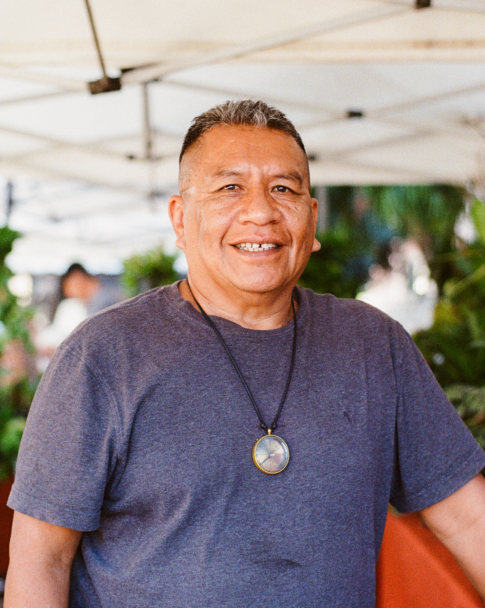

The neighborhood saxophonist
Every now and then I will hear the sweet sound of a saxophone ringing right from outside my apartment. Chris Braig, jazz musician and filmmaker, teaches a music program at the charter school down the block from me. To avoid traffic he commutes early, finds parking, and practices scales in the back of his car before going to meet his students.
One morning, he blessed me the opportunity to take his portraits while he played for me and shared his life stories. Once, a traveling musician with the army band, he used to play music for the serving men of this country.
Now, he teaches the youth how to foster their own passions in music.
Music has taken him far and wide and connected him with many lives; it brought me out of my front doorsteps and provided me the opportunity to connect with him.
Funny how art does that -- Connects people of all kind.

Moab's most Hospitable host
I stayed at Danny’s campsite, High Sage Hogans in Moab UT, back in June of 2025. It was a short one night stay. The morning before I left, Danny took me on a tour of his campsite which doubled as a farm with animals and harvesting crops. I met Ringo, the his herding dog, fed goats from hay bales, and ate lemony sorrel from his leafy garden.
Danny told grand stories of how had hiked and climbed the Grand Tetons. I asked about the old school bus in the corner of the campsite. It was gutted inside, the original seats gone. He would build it to travel to various climbing sites with fellow journeymen. A true adventurer!
He was filled of excitement as he rattled off his plans to explore America’s vast landscapes. And I knew that at the end of each expedition he would return to his homestead in Moab to Ringo, to his billygoats, to his garden, and to the guest of his campsite — all of which he took expectational care of.
Thank you Danny for letting me take portraits of you. I’m so glad you were pleased by them. Thank you for welcoming this curious visitor. Thank you for sharing your stories. Thank you for reminding me just how hospitable people can be.